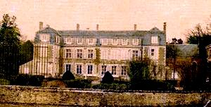
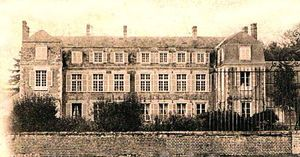
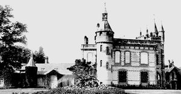
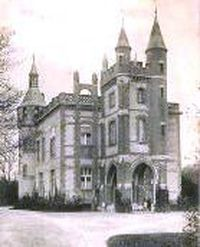

Recensement Jean-Claude Truffet
| Département | 45 — Loiret |
| Canton | Beaugency |
| Commune | Lailly en Val |
| Type d'édifice | Château |
| Période d'origine | XVII-XIX |




trois chateaux dans cet article; Bertaudière, Bordes et Pully BERDAUDIERE, de plan rectangulaire, édifié en moellon, possède des ouvertures d'une grande sobriété et un escalier à vis, en bois, dans uvre, au noyau torsadé et directement accessible depuis la porte d'entrée, toiture avec des marches qui montent jusqu'au comble, ce qui le fait émerger de l'ensemble comme au château de la Morinière réalisé dans les années 1545. Seules fioritures : deux lucarnes en pierre qui viennent conclure les deux travées de fenêtres de la façade antérieure ainsi qu'un escalier en pierre, de quelques marches, formant perron et qui permet d'atteindre le rez-de-chaussée surélevé depuis la cour. BORDES, Vincent Caillard, commença la construction du château au XIXe siècle. A sa mort en 1843, son fils aîné, Marc Caillard, hérita. Eugène Sue, son beau-frère, lui acheta quelques dépendances du château et fit élever dans son prolongement une galerie où il aimait écrire et une serre vers 1844-1945. Alexandre Dumas qui vit la demeure en 1846 Marc en acheva la construction vers 1880. Du XIX e siècle bâtiment couvert en terrasse ; le corps principal avait deux niveaux d'élévation ordonnancée, d'une tour-porche en avant-corps à trois niveaux ; présence de tourelles à toit conique sur cette dernière et d'une tour ronde, à l'arrière du bâtiment, à toit circulaire à la base et polygonal au-dessus ; une galerie en rez-de-chaussée complétait l'ensemble sur l'arrière gauche du bâtiment avec une serre. La brique et le moellon enduit sont employés sur l'ensemble des constructions.
PULLY, la propriétaire la comtesse d'Archiac, de style néo-classique qui fit son apparition à la fin du règne de Louis XV. certainement au siècle dernier lorsque monsieur Geffrier en était propriétaire. C'est sa fille, Mme de la Frésange, qui hérita de la propriété et la vendit en 1955 à la famille Hackenberger. Cette dernière fit démolir le château, mais conserva les communs , le propriétaire Marcel Bich construit en 1800 par Vincent Gaillard, créateur des « Messageries Gaillard-Lebrun ». Son gendre Eugène Sue, sy réfugia de 1843 à 1849. Le château est acquis en 1977 par Marcel Bich qui le fera démolir en 1979 pour transformer le domaine en golf international ouvert depuis 1987. du XVIIIe siècle château à un étage carré, élévation ordonnancée, murs en brique et pierre et toit à longs pans brisés et croupes de même; communs disposées symétriquement de part et d'autre de la cour et présentant chacun deux pavillons à un étage carré, élévation ordonnancée ou à travées et toit en pavillon couvert d'ardoises ; ces pavillons sont implantés aux extrémités des longs corps de bâtiments à usage de remises et d'écuries à toit a longs pans et croupes couverts d'ardoises ; les murs sont en brique apparente ou enduite ; le pavillon près de l'entrée, à droite, et les écuries ont une façade postérieure à pan de bois apparemment hourdée de brique ; orangerie en brique avec toit à longs pans et croupes couverts en tuiles plates ; portail principal d'entrée en fer forgé. De l'ancien château construit en 1763, il ne reste que les communs; la clôture et la grille sont inscrits à l'inventaire des M.H.
Berdaudière; seigneur local Bordes; Vincent Caillard Pully; comtesse d'Archiac,
"
trois chateaux à Lailly en Val Bertaudière, Bordes grav 3-4 et Pully grav -1-2